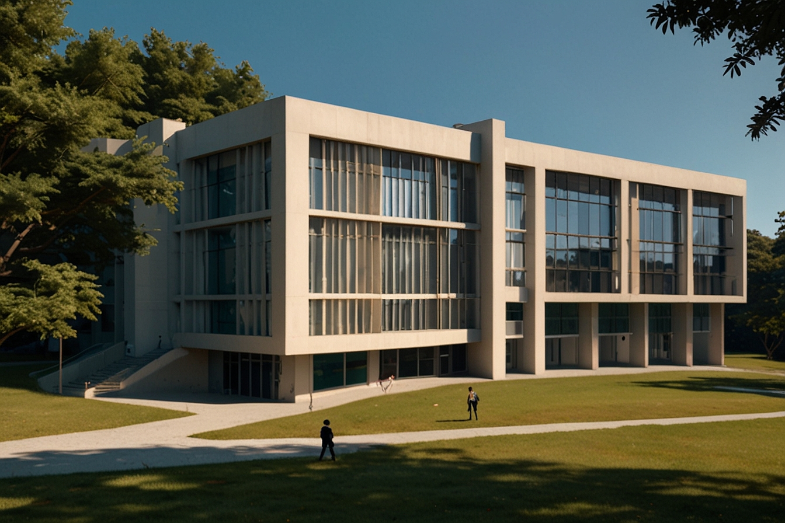

SIS CPA
-

Saiba como funciona uma CPA
Uma Comissão Própria de Avaliação (CPA) é um órgão presente em instituições de ensino superior, responsável por coordenar e conduzir processos internos de avaliação institucional, visando o aprimoramento da qualidade educacional, conforme diretrizes estabelecidas pelos órgãos reguladores da educação.
-
O que a CPA proporciona para os estudantes?
A CPA proporciona aos estudantes um ambiente educacional de qualidade através da avaliação contínua dos processos acadêmicos e da infraestrutura da instituição, resultando em melhorias no ensino, na aprendizagem e na experiência geral do aluno durante sua jornada acadêmica.